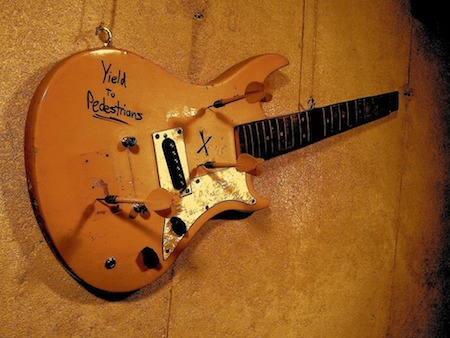
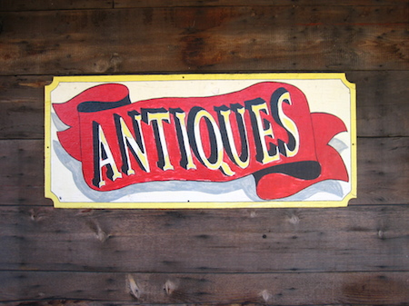

Yield to Pedestrians is a four-piece punk band based on Cape Cod, Massachusetts. They currently have a Facebook page that they use to keep in contact with their followers, but no website. A website might allow them to reach more listeners and increase their legitimacy as professional group of musicians.

Proposed web pages:
Home
About
Music
Videos
Shows
William Nickerson Antiques
William Nickerson Antiques is a small antique dealership based in Orleans, Massachusetts that currently does not have a website. A website would help them promote the business, advertise upcoming events, and keep in contact with prospective buyers.

Photo by Jeremy Keith.
Proposed web pages:
Home
About
WNA at the Mews
Upcoming Shows
Inventory
Bangkok Kitchen
Bangkok Kitchen is a small Thai restaurant in Hyannis, Massachusetts, owned and operated by a staff of about six cooks and servers. Situated near Barnstable airport, it's well-known by frequent Cape Air flyers, but overlooked my many locals and tourists alike. A website would serve to increase the restaurant's presence in the community.
Photo by Stephanie.
Proposed web pages:
Home
About
Menus
Lunch
Dinner
Reviews
Contact
Booksmith Musicsmith
Booksmith Musicsmith is an independent bookstore in Orleans, Massachusetts and does not currently have a website. Booksmith Musicsmith is a staple of the local community, but struggles to compete with both chain bookstores, like Barnes&Noble, and online realtors, like Amazon. A website would serve to increase their volume of business through an online catalogue.